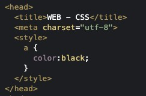

문제해결 -> 행복을 가져온다 그러나, 다시 불만과 불편함이 생긴다. 그리고 다시 문제를 해결하다 보면, 좌절과 절망을 마주하게된다. 그러나 이는 인류를 공부하게 했고, 이는 짜릿한 해방감과 발전, 풍요를 가져왔다.
정보와 디자인은 다르다 -> 시각장애인에게 도움이 되는 것이 정보다. 정보로서의 가치있는 것이 무엇인가에 탐구와 고민을 시작하라.
tag가 디자인으로서 사용되자, 곧 웹페이지가 가진 정보로서의 가치가 떨어졌다. -> 문제를 해결하는 쉬운 것(tag)에서 어려운 것(language)으로 변화한 이유다.
2
html에서 스타일/디자인에 대한 요소는 style 태그 안에 가둬 두었다. -> 이로써 효율적으로 정보와 디자인을 분리했고, html을 보호했으며 불편을 상쇄할 만큼의 폭팔적인 성장을 열었다.
물질이 존재하는 세상에서는 일어나지 않는 일 -> 하나를 바꾸면 모든 것이 변한다.
코딩을 어떻게 할까?에 집중된 수업이지만 -> 코딩을 잘하는 것은 중복을 제거하고, 타인에 의한 유지보수의 용이성, 가독성, 의사소통, 오류가능성의 제거를 도모하는 것이다.

무시해라
((!-- 내용~~~ --))
3
html과 css는 다른 언어이므로, 웹브라우저에게 그 둘의 구분을 해줘야 한다.-> 1) head에서 style 태그를 쓴다. (선택자 selector "a" 와 그 구체적인 효과 "color:green"를 선언 declaration 한다. 2) body에서 style 속성을 쓴다.
style 속성은 html이지만, 그 내용은 css로 해석된다. -> 전체 "a"링크 중에서 특정 링크만 단독적으로 색깔을 달리 하는 맞춤형 디자인을 가능하게 한다.